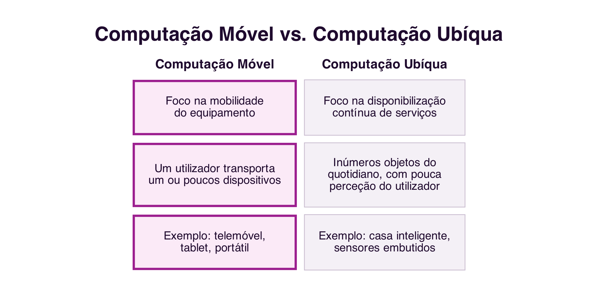

11 Mobilidade, Ubiquidade e Interação
Mobilidade, Ubiquidade e Interação
Introdução
Este último capítulo fecha o bloco dedicado às plataformas cooperativas com duas questões complementares: como é que a colaboração acompanha as pessoas para fora da secretária, através da computação móvel e ubíqua; e como se avalia, de forma sistemática, se um sistema colaborativo oferece uma boa experiência a quem o usa.
11.1 Computação Móvel e Ubíqua
A Computação Móvel tem como foco a mobilidade: equipamentos portáteis, telefonia celular e redes sem fios expandem os limites dos locais e dos momentos em que é possível colaborar (Filippo et al. 2011). A Computação Ubíqua, um termo cunhado por Mark Weiser em 1988, enquanto trabalhava na Xerox PARC, tem um foco ligeiramente diferente: a disponibilização contínua de serviços através de inúmeros objetos do quotidiano com software embutido, cada vez menos percetíveis enquanto computadores (Filippo et al. 2011) (Figura 11.1).

Para Weiser, a Computação Ubíqua é a terceira era da computação: depois da era dos computadores de grande porte, partilhados por vários utilizadores, e da era dos computadores pessoais, um utilizador por computador, segue-se a era em que cada utilizador usa, sem disso se aperceber, vários dispositivos ao mesmo tempo. Mobilidade e ubiquidade não são sinónimos: um portátil é móvel, mas não é ubíquo; um sensor embutido numa porta é ubíquo, mas não é móvel. Muitos serviços colaborativos de hoje combinam as duas dimensões.
11.2 Localização
Uma grande parte dos serviços colaborativos móveis explora a localização do utilizador: dispositivos móveis, equipados com GPS, acelerómetro, bússola e giroscópio, informam onde o utilizador está e para onde se dirige (Filippo et al. 2011). Os serviços que têm por base as coordenadas geográficas de pessoas e elementos do mundo real e virtual chamam-se Serviços Baseados em Localização (Location Based Services, LBS).
Aplicações do dia a dia como o Google Maps, o Uber ou as aplicações de entrega de comida usam a localização para coordenar encontros entre pessoas, veículos e destinos que, de outra forma, exigiriam combinação prévia e detalhada. Jogos como o Pokémon GO levam a mesma lógica ao território da colaboração lúdica: tal como no geocaching, um jogo de caça ao tesouro anterior aos telemóveis inteligentes, em que coordenadas georreferenciadas guiam jogadores até objetos escondidos, a localização transforma o espaço físico da cidade num tabuleiro de jogo partilhado.
11.3 Objetos Inteligentes
A Computação Ubíqua deu origem à ideia de objetos inteligentes: dispositivos de baixo custo, equipados com sensores e capacidade de comunicação em rede, que deixam de ser inertes e passam a ter um comportamento próprio, reagindo aos outros objetos, às pessoas e ao ambiente à sua volta (Filippo et al. 2011). A este conjunto de objetos ligados em rede chama-se hoje Internet das Coisas (Internet of Things, IoT).
Uma casa inteligente, equipada com assistentes como o Google Home ou a Alexa, fechaduras inteligentes e eletrodomésticos ligados em rede, é o exemplo mais próximo do quotidiano de muitas pessoas. Um relógio inteligente (smartwatch), como o Apple Watch, é outro exemplo: comunica com o telemóvel do seu utilizador, mas também com outros dispositivos e serviços, apoiando desde a comunicação até à monitorização da saúde. Em conjunto, estes objetos interligados formam um ecossistema colaborativo, em que cada dispositivo contribui com dados e funcionalidades para os restantes. Um princípio central destes objetos é a tecnologia calma: quanto mais dispositivos existem, mais importante é que se tornem invisíveis no seu funcionamento, sem exigir atenção constante de quem os usa (Filippo et al. 2011).
11.4 Infraestrutura: Redes sem Fios e Sensores
A computação móvel e ubíqua depende de uma infraestrutura tecnológica que traz desafios próprios aos sistemas colaborativos (Filippo et al. 2011): redes sem fios, que expandem o alcance da internet além das redes cabeadas mas esbarram em limites físicos e de largura de banda; sensores, que captam dados de localização, movimento ou do ambiente; e o suporte ao contexto, a capacidade de um sistema se adaptar às mudanças de rede, bateria e situação de quem o usa, sem que isso prejudique a colaboração em curso.
Sem aprofundar, vale referir também os métodos de desenvolvimento multiplataforma: existem hoje frameworks que permitem criar uma aplicação para Android e iOS a partir do mesmo código, em vez de programar cada versão em separado. O React Native, desenvolvido pela Meta, usa JavaScript para produzir aplicações nativas; o Flutter, da Google, usa a linguagem Dart e é conhecido pela sua performance; o Xamarin, da Microsoft, usa C# e integra-se com o ecossistema .NET; o Ionic, baseado em tecnologias Web como HTML, CSS e JavaScript, gera aplicações híbridas.
11.5 Qualidades de Uso
Uma vez desenvolvido, como saber se um sistema colaborativo oferece uma boa experiência a quem o usa? A área de Interação Humano-Computador (IHC) propõe critérios, ou requisitos de qualidade de uso, para responder a esta pergunta (Prates 2011) (Figura 11.2):

- Usabilidade: segundo a norma ISO 9241-11:2018, a medida em que um sistema pode ser usado por utilizadores específicos para alcançar objetivos bem definidos com eficácia, eficiência e satisfação, num determinado contexto de uso (International Organization for Standardization 2018). A eficácia diz respeito à exatidão e completude com que os utilizadores atingem os seus objetivos; a eficiência, aos recursos, como tempo e esforço, despendidos em relação a essa exatidão e completude; a satisfação, à ausência de desconforto e à atitude positiva face ao uso do sistema. Nielsen acrescenta ainda a facilidade de aprendizagem (learnability), a facilidade de recordação (memorability) e a taxa de erros como atributos complementares da usabilidade (Nielsen 1993).
- Sociabilidade: segundo Preece, a sociabilidade de uma comunidade online assenta em três pilares que determinam se ela prospera: o propósito, a razão que leva as pessoas a participar e que confere coesão ao grupo; as pessoas, as suas características, papéis e diversidade; e as políticas, as regras, normas e códigos de conduta que regulam o comportamento do grupo (Preece 2000).
- Comunicabilidade: a capacidade de o sistema transmitir aos utilizadores as decisões do seu projetista sobre quem são os utilizadores, o que podem fazer, e como o podem fazer. O conceito nasce no âmbito da Engenharia Semiótica, área que estuda a interação humano-computador como um processo de comunicação entre projetistas e utilizadores, mediado pela própria interface (Souza 2005).
- Acessibilidade: segundo o W3C, o acesso à Web por todas as pessoas, independentemente de deficiência, é um aspeto essencial, o que implica perceber, compreender, navegar e interagir sem barreiras. Abrange limitações visuais, auditivas, motoras, cognitivas e neurológicas. A referência normativa mais usada são as
WCAG 2.2, organizadas em torno de quatro princípios: percetível, operável, compreensível e robusto (W3C Web Accessibility Initiative 2023).
Destas quatro, a sociabilidade é a única específica dos sistemas colaborativos: a usabilidade, a comunicabilidade e a acessibilidade aplicam-se a qualquer sistema interativo, mesmo de um só utilizador, mas a sociabilidade só faz sentido quando existe, de facto, um grupo a interagir através do sistema (Prates 2011). A acessibilidade, por seu lado, não é exclusiva dos sistemas colaborativos, mas funciona nestes como condição de inclusividade social: um sistema inacessível exclui membros do grupo, comprometendo a própria sociabilidade.
As quatro qualidades relacionam-se entre si, e nenhuma existe de forma isolada: um sistema com baixa comunicabilidade dificulta a aprendizagem, resultando também em baixa usabilidade; um sistema com baixa acessibilidade exclui utilizadores, o que reduz a sociabilidade do grupo. Um sistema colaborativo de qualidade equilibra as quatro dimensões em simultâneo, e a sua avaliação deve ser feita com utilizadores reais, em contexto real.
11.6 Síntese
Este capítulo, o último do bloco dedicado às plataformas cooperativas, tratou da mobilidade, da ubiquidade e da qualidade da interação:
- A Computação Móvel tem foco na mobilidade dos equipamentos; a Computação Ubíqua tem foco na disponibilização contínua de serviços através de inúmeros objetos do quotidiano (Filippo et al. 2011)
- Os Serviços Baseados em Localização coordenam encontros entre pessoas, veículos e destinos a partir das coordenadas geográficas do utilizador
- Os objetos inteligentes, ligados em rede como parte da Internet das Coisas, seguem o princípio da tecnologia calma: quanto mais numerosos, mais invisíveis devem ser no seu funcionamento
- A infraestrutura de redes sem fios e sensores, e os frameworks multiplataforma, apoiam o desenvolvimento de sistemas colaborativos móveis e ubíquos
- As quatro qualidades de uso, usabilidade (eficácia, eficiência e satisfação), sociabilidade (propósito, pessoas e políticas), comunicabilidade (a comunicação das decisões de projeto ao utilizador) e acessibilidade (uso sem barreiras), avaliam se um sistema colaborativo oferece uma boa experiência a quem o usa, e relacionam-se entre si (Prates 2011)
11.7 Para Refletir
Pensa numa aplicação móvel que uses com frequência e que dependa da tua localização: que colaboração torna possível, que de outra forma não existiria?
E quanto às quatro qualidades de uso: escolhe um sistema colaborativo que uses regularmente e avalia-o rapidamente em cada uma delas. Qual é o seu ponto mais fraco?